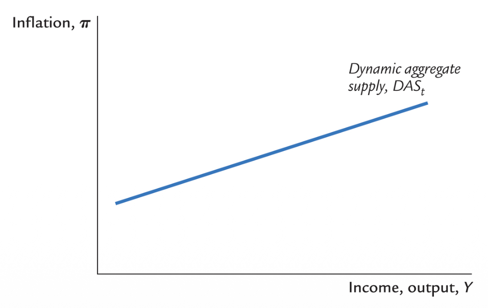
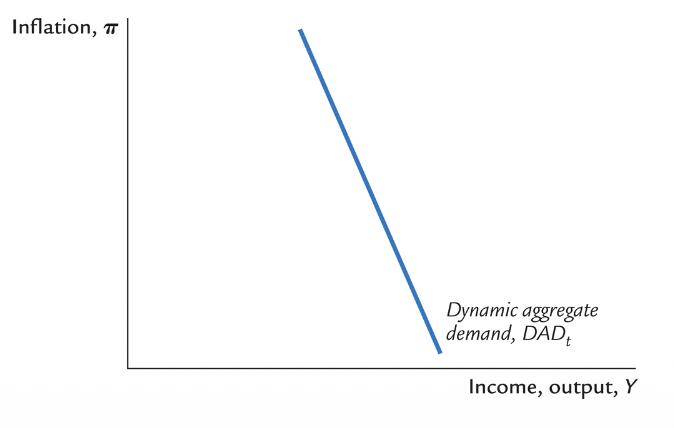
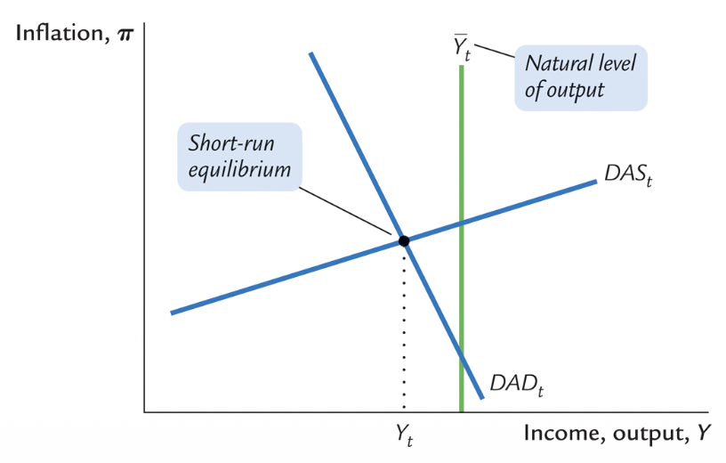
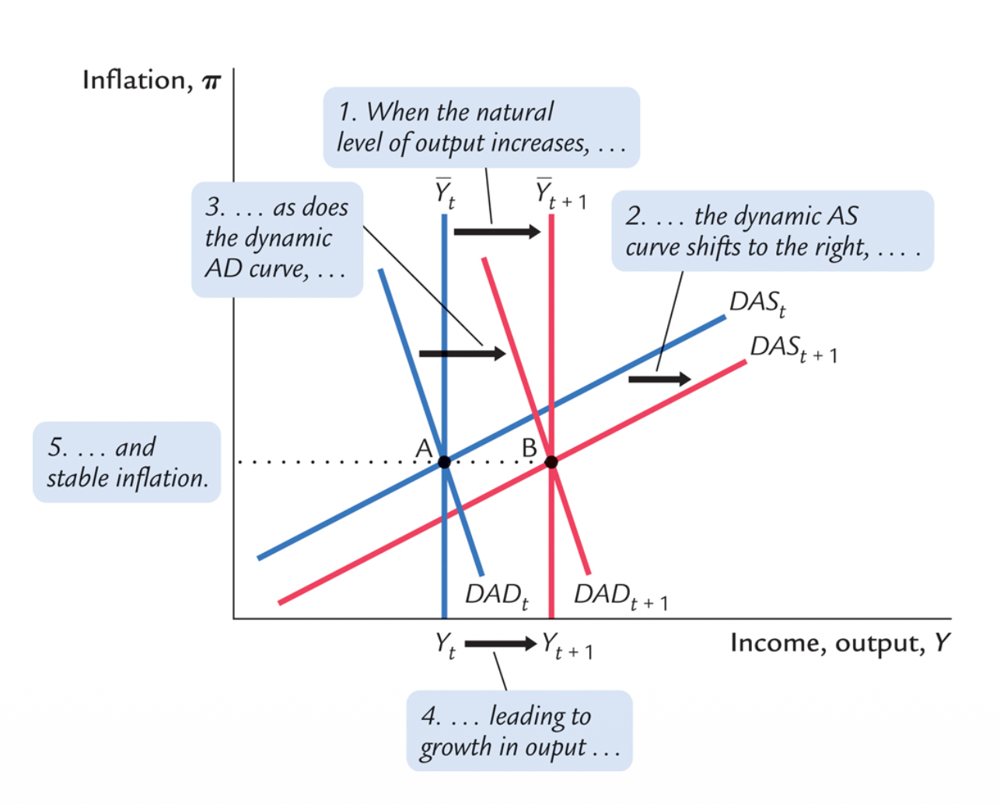

Model Equilibrium
1. Introduction to Model Analysis
Once we have comprehensively defined our model structure (the interdependent IS, PC, and MPR equations), our primary objective strictly shifts towards utilizing this framework for robust analysis. Specifically, we want to analyze the exact behavioral dynamics of all structural variables when exposed to various shifts and shocks.
A macroeconomic model fundamentally possesses two distinct types of equilibria that we must evaluate:
- Long-run equilibrium: The ultimate destination where the economy permanently settles.
- Short-run equilibrium: The immediate, dynamic reaction of the economy. While this state is technically not perfectly stable (because it is constantly adjusting towards the long-run), it is still formally classified as an equilibrium mathematically because all simultaneous equations temporarily balance.
The crucial first step in analyzing any structural model is properly defining and investigating its long-run equilibrium. For highly complex models, economists must first verify whether any stable long-run equilibrium even exists mathematically before running simulations.
How do we firmly define long-run equilibrium in our specific model? The paramount rule is: everything, emphatically including inflation, is completely stable.
Mathematically, variables no longer shift across time periods:
- $y_t = y_{t-1}$
- $\pi_t = \pi_{t-1}$
- $i_t = i_{t-1}$
- $r_t = r_{t-1}$
Logically, this implies two absolute anchors: $y_t = \bar{y}_t$ (equilibrium output rests flawlessly at its natural potential) and $\pi_t = E_t \pi_{t+1} = \pi^*_t$ (actual inflation fundamentally converges exactly with expected inflation and the rigidly targeted central bank goal).
For these fundamental equalities to hold simultaneously, the real interest rate must default back to its exogenous natural state: $r_t = \rho$. Consequently, the nominal interest rate strictly follows Fisher's translation to yield $i_t = \rho + \pi^*_t$.
This final calculated figure, $\rho + \pi^*_t$, is universally recognized as the long-run neutral interest rate.
2. Navigating the Short-Run Equilibrium
Analyzing the short-run is mathematically intensive. We currently possess 5 interlinked equations and 5 endogenous variables. Attempting to analyze this 5-dimensional structure simultaneously using raw mental geometry is impossible.
The equations are deeply simultaneous in nature: To understand the output level, you require the real interest rate. To calculate the real interest rate, you must input the nominal interest rate. And recursively, to determine the nominal interest rate set by the central bank, you must already know the output gap. This creates a circular dependency.
To resolve this, modelers employ two distinct operational solutions:
Approach 1: 2D Simplification
Mathematically substitute the equations into each other to compress the 5-variable space directly into a manageable 2 variable space. This permits us to map the most critical aspects of the model rigidly on a single two-dimensional geometric graph (typically Output vs Inflation).
Approach 2: Direct Simulation
Utilize raw algorithms and computational power to automatically calculate the simultaneous responses of the model to exogeneous structural shocks, analyzing the results across multiple distinct graphs (Impulse Response Functions).
We will construct the analytical framework utilizing the first approach (graphical 2D simplification) to build raw intuition.
3. The Dynamic Aggregate Supply (DAS) Curve
To reduce our 5 equations down to 2, we first compress the supply side. We achieve this by taking the raw Phillips Curve and mathematically combining it strictly with our assumption defining inflation expectations.
Using purely backward-looking expectations ($E_t \pi_{t+1} = \pi_{t-1}$), we yield the Dynamic Aggregate Supply (DAS) curve:
Slope Intuition
The DAS curve is functionally upward sloping. This directly inherits the foundational logic of the Phillips-curve relationship: Higher aggregate output functionally pressures labor capacity, meaning higher ultimate prices and accelerating inflation (the classic demand-pull mechanism).
Changes in sheer output functionally cause movement along the rigid DAS line framework. Conversely, changes originating from previous historical inflation rates ($\pi_{t-1}$), raw potential output capacity ($\bar{y}_t$), or isolated external supply shocks ($\nu_t$) physically shift the entire DAS curve graph on the axis.

4. The Dynamic Aggregate Demand (DAD) Curve
We now compress the entire remaining structure of the model (The Demand Side, The Monetary Rule, and the Fisher conversion) forcefully into a single corresponding line: The Dynamic Aggregate Demand (DAD) curve.
Step-by-step Mathematical Derivation
We explicitly employ the four remaining un-compressed equations:
- IS Curve: $y_t = \bar{y}_t - \alpha(r_t - \rho) + \epsilon_t$
- Fisher Equation: $r_t = i_t - E_t\pi_{t+1}$
- Monetary Rule: $i_t = \pi_t + \rho + \theta_\pi (\pi_t - \pi^*_t) + \theta_y (y_t - \bar{y}_t)$
- Expectations: $E_t\pi_{t+1} = \pi_t$
Step 1: Substitute the Fisher substitution directly into the IS Curve:
$y_t = \bar{y}_t - \alpha(i_t - E_t\pi_{t+1} - \rho) + \epsilon_t$
Step 2: Inside that resultant equation, substitute the central bank's nominal Monetary Rule for $i_t$:
$y_t = \bar{y}_t - \alpha( \pi_t + \rho + \theta_\pi (\pi_t - \pi^*_t) + \theta_y (y_t - \bar{y}_t) - E_t\pi_{t+1} - \rho) + \epsilon_t$
Step 3: Apply the firm assumption that $E_t\pi_{t+1} = \pi_t$. Notice immediately that $\rho$ cancels with $-\rho$, and $\pi_t$ directly cancels with $-\pi_t$ (this cancellation logic holds strictly because we assume the Taylor Rule perfectly reacts one-to-one to base inflation before applying its $\theta_\pi$ premium weighting).
$y_t = \bar{y}_t - \alpha( \theta_\pi (\pi_t - \pi^*_t) + \theta_y (y_t - \bar{y}_t) ) + \epsilon_t$
Step 4: Expand the $\alpha$ multiplier, and collect all like terms pertaining to the isolated variable $y_t$ onto the left-hand side:
$(1 + \alpha\theta_y) y_t = (1 + \alpha\theta_y) \bar{y}_t - \alpha\theta_\pi (\pi_t - \pi^*_t) + \epsilon_t$
Step 5: Divide the entirety by $(1 + \alpha\theta_y)$ to cleanly solve strictly for $y_t$, producing the final definitive DAD blueprint:
This concisely dictates that the DAD curve relates output exclusively and rigidly to inflation and shock residuals, explicitly presuming the central bank precisely follows its Taylor mandate and all actors execute strictly backward-looking estimations. To simplify geometry significantly, this is often rewritten employing gamma combinations as $y_t = \bar{y}_t - \gamma_1(\pi_t - \pi^*_t) + \gamma_2\epsilon_t$.
5. Analyzing DAD Slopes and Movements
The pure DAD curve accurately reflects a strictly negative relationship between prevailing inflation and the total demand for goods and services in the economy. Why is it definitively downward sloping? It roots inherently in the institutional reaction of the Central Bank.
The Central Bank Mandate dictates the DAD Slope
The DAD slopes downwards specifically because the Central Bank explicitly reacts to rising inflation by hiking nominal interest rates even faster and mathematically higher than the sheer inflation rise itself (the Taylor Principle). This forcefully causes real absolute interest rates to abruptly rise, consequently devastating the total demand for goods.
Thought Experiment: What if the Central Bank was incredibly weak and increased nominal rates less than inflation? The real interest rate would technically collapse, drastically stimulating unchecked demand. The entire DAD curve would break structure and flip upward sloping, destroying the stable anchor.
Thus, what strictly controls the sheer steepness of the DAD curve? The exact proportional ratio configured in the Central Bank's reaction function. A much higher aggressiveness against inflation (a huge $\theta_\pi$ relative parameter compared to $\theta_y$) mechanically crafts an extremely steep, inelastic DAD slope curve on our graph.
A change in inflation triggers mere geometrical movement directly along the DAD trace line. However, rigid changes permanently applied to structural potential output, total altering of the inflation goal target, or external demand shocks comprehensively force the physical DAD line to laterally shift.

6. Bringing it Together: Equilibrium Dynamics
The ultimate dynamic, short-run geometry consists squarely of the intersecting matrix of these two newly forged curves (DAD and DAS). Together, they algorithmically evaluate and dictate output and inflation flawlessly simultaneously.
The Dynamic Form
Technically, the DAS curve is dynamic. It intrinsically links directly backwards across physical time to previous states (because $\pi_t$ physically equals previous $\pi_{t-1}$).
The Static Form
Conversely, the compressed DAD is not dynamic across time periods. Its functional parameters are strictly trapped in the moment 't' without retaining historical tails.
Critical Behavior Post-Shock: Immediately following the initial isolated ripple effect of any structural shock upon the graph, only the DAS curve possesses the capacity to keep shifting sequentially continuously over time segments. The DAD curve remains wholly stationary and unchanged until a fresh brand-new exogenous shock forcefully resets it.

The Explicit Algebraic Solution [Advanced]
Relying exclusively on geometric estimations isn't strictly necessary. By combining both structures perfectly algebraically, mathematicians solve precisely for the intersection, establishing the ultimate endogenous variables completely as strict mathematical formulas directly reacting to shocks alone:
$\pi_t = \frac{(1 + \alpha\theta_y)(\pi_{t-1} + \nu_t) + \alpha\theta_\pi\phi\pi^*_t + \phi\epsilon_t}{1 + \alpha(\theta_\pi\phi + \theta_y)}$
By extracting these ultimate absolute values for the primary variables ($Y_t$ and $\pi_t$), one can mathematically cycle back through the foundational equations recursively to derive the resultant deterministic nominal rate $i_t$, calculating expectations $E_t \pi_{t+1}$, and extracting the raw real rate framework $r_t$.
Simulating an Increase in Potential Output
If we apply these absolute matrices to simulate an unexpected but positive economic phenomenon, such as an absolute jump upward in potential capacity ($\bar{y}_t$), the analytical graph strictly commands identical, symmetrical shifts directly mirroring within both the DAD and DAS constructs. This symmetrical slide dictates specifically resulting mathematically in massive long-term output gains while neutralizing inflation fluctuations perfectly towards zero deviance.
